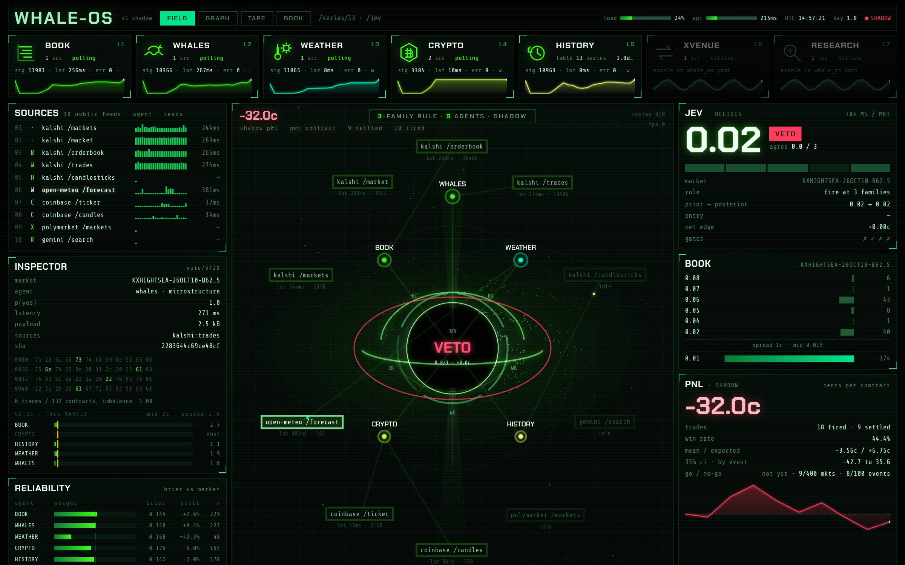
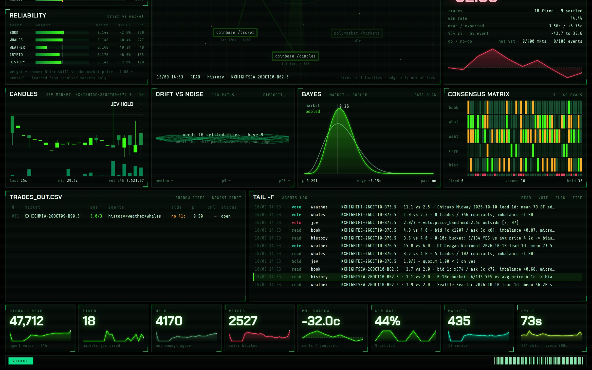
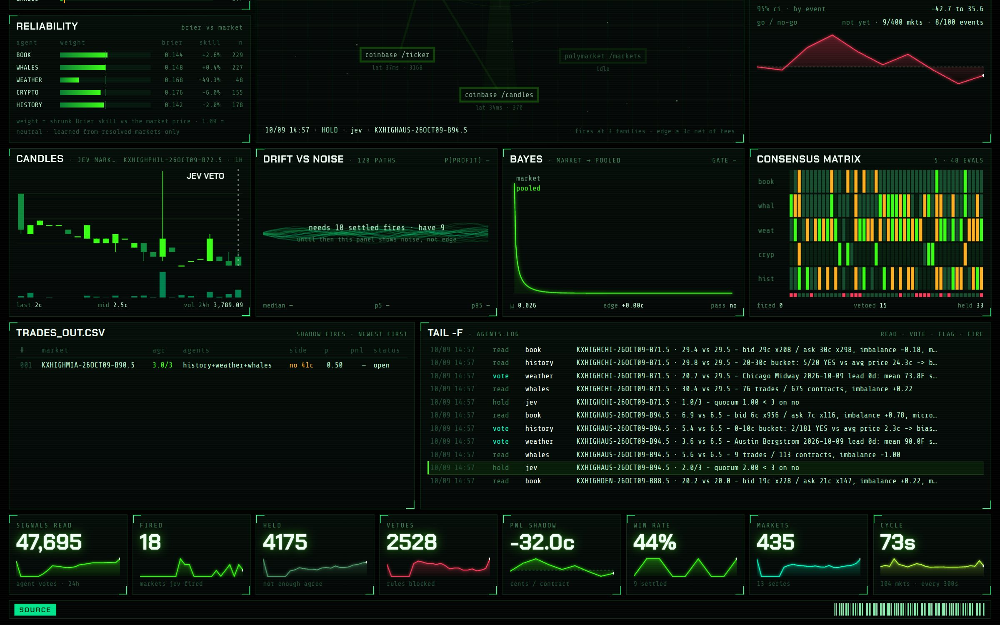

Top of the HUD. Shadow mode: every decision is hypothetical and scored against real settlements; no orders are placed.

123456789101112Scroll down: the four live charts.

13141516Bottom of the HUD: the shadow trade log, the agent log and the totals.

171819| Particles flowing in | an agent pulled data and voted: they travel source box → agent node → core. Colour = the agent's family. |
| Agent nodes | the glowing dots around the hole, one per enabled agent; they flare when they vote. |
| Consensus ring | the segmented ring hugging the horizon: one segment per agent (two-letter label). green = leans YES vs the market · amber = leans NO · dim = flat (within 2c) · dark = abstained |
| Inside the horizon | Jev's live call: FIRE (green) / VETO (red) / HOLD / IDLE, with agreeing/quorum · edge in cents. |
| Jets from the poles | faint and breathing normally; they blaze when Jev fires. |
| Rings bursting from the core | a decision: green = fire, red = veto, grey-green = hold. |
| Disk, stars, lensing, photon ring | atmosphere only: they carry no data. |
| Families | agents reading the same data count once: BOOK + WHALES = one microstructure vote; WEATHER or CRYPTO = model; HISTORY = calibration. |
| Fire | 3 families agree, at least 3 voters, and the edge is ≥ 3c per contract after Kalshi fees, priced as a taker. |
| Veto | a hard rule blocked it whatever the votes: spread too wide, one-sided book, price outside the band, too soon or too far from close, ambiguous rules text, or a blocked series. |
| Hold | not enough agreement or edge. |
./scripts/whale_os.sh report prints where it stands.ssh -L 8890:127.0.0.1:8890 -L 8055:127.0.0.1:8055 root@vmi3134862.contaboserver.net
2 · Browse to http://localhost:8890cd /root/whale-os/Swarm-Kalshi./scripts/whale_os.sh status · report · logsScreens captured from the live system on 2026-10-09 14:58 UTC. Regenerate: docs/legend/legend_build.py.